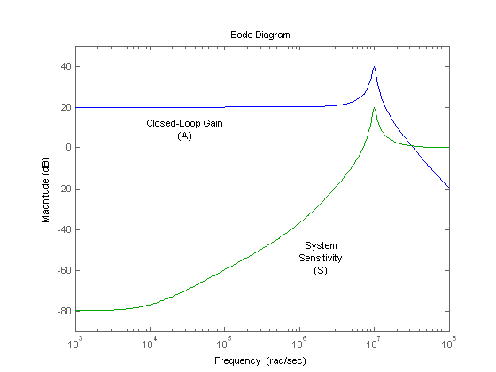

Feedback Amplifier Demo
This demo demonstrates the design of a non-inverting feedback amplifier circuit using the Control System Toolbox. This design is built around the operational amplifier (op amp), a standard building block of electrical feedback circuits.
This tutorial demonstrates how a real electrical system can be designed, modeled, and analyzed using the tools provided by the Control System Toolbox.
Authors: A. DiVergilio Copyright 1986-2002 The MathWorks, Inc. $Revision: 1.9 $ $Date: 2002/04/08 16:22:23 $
The standard building block of electrical feedback circuits is the operational amplifier (op amp), a differential voltage amplifier designed to have extremely high dc gain, often in the range of 1e5 to 1e7.
The electrical symbol for the op amp is shown above.
opampdemo_aux(1)
This demo assumes the use of an uncompensated op amp with 2 poles (at frequencies w1,w2) and high dc gain (a0). Assuming this op amp is operated in its linear mode (not saturated), then its open-loop transfer function can be represented as a linear time-invariant (LTI) system, as shown above.
Though higher-order poles will exist in a physical op amp, it has been assumed in this case that these poles lie in a frequency range where the magnitude has dropped well below unity.
opampdemo_aux(2)
The following system parameters are assumed:
>> a0 = 1e5; >> w1 = 1e4; >> w2 = 1e6;
Next, you want to create a transfer function model of this system using the Control System Toolbox. This model will be stored in the MATLAB workspace as an LTI object.
opampdemo_aux(3)
First, define the Laplace variable, s, using the TF command. Then use 's' to construct the open-loop transfer function, a(s):
>> s = tf('s');
>> a = a0/(1+s/w1)/(1+s/w2)
Transfer function:
100000
--------------------------
1e-10 s^2 + 0.000101 s + 1
opampdemo_aux(4)
You can view the frequency response of a(s) using the BODE command:
>> bode(a,'r')
Right-click on the plot to access a menu of properties for this Bode Diagram. Left-click on the curves to create moveable data markers which can be used to obtain response details.
opampdemo_aux(5)
You can view the normalized step response of a(s) using the STEP and DCGAIN commands:
>> a_norm = a / dcgain(a); >> step(a_norm,'r')
Right-click on the plot and select "Characteristics -> Settling Time" to display the settling time. Hold the mouse over the settling time marker to reveal the exact value of the settling time.
opampdemo_aux(6)
Now add a resistive feedback network and wire the system as a non-inverting amplifier.
This feedback network, b(s), is simply a voltage divider with input Vo and output Vn. Solving for the ratio Vn/Vo yields the transfer function for b(s):
b = Vn / Vo = R1 / (R1 + R2)
opampdemo_aux(7)
The block diagram representation of the system is shown above.
Solving for the ratio Vo/Vp yields the closed-loop gain, A(s):
A = Vo / Vp = a / (1 + ab)
If the product 'ab' is sufficiently large (>>1), then A(s) may be approximated as
A = 1 / b
opampdemo_aux(8)
Now assume that you need to design an amplifier of dc gain 10 and that R1 is fixed at 10 kOhm. Solving for R2 yields:
>> A0 = 10; >> b = 1 / A0; % approximation for ab>>1 >> R1 = 10000; >> R2 = R1 * (1/b - 1)
R2 =
90000
opampdemo_aux(9)
Construct the closed-loop system using the FEEDBACK command:
>> A = feedback(a,b);
Next, plot the frequency responses of a(s) and A(s) together using the BODE command:
>> bode(a,'r',A,'b')
opampdemo_aux(10)
The use of negative feedback to reduce the low-frequency (LF) gain has led to a corresponding increase in the system bandwidth (defined as the frequency where the gain drops 3dB below its maximum value).
This gain / bandwidth tradeoff is a powerful tool in the design of feedback amplifier circuits.
Since the gain is now dominated by the feedback network, a useful relationship to consider is the sensitivity of this gain to variation in the op amp's natural (open-loop) gain.
opampdemo_aux(11)
Before deriving the system sensitivity, however, it is useful to define the loop gain, L(s), which is the total gain a signal experiences traveling around the loop:
>> L = a * b;
You will use this quantity to evaluate the system sensitivity and stability margins.
opampdemo_aux(12)
The system sensitivity, S(s), represents the sensitivity of A(s) to variation in a(s). The inverse relationship between S(s) and L(s) reveals another benefit of negative feedback: "gain desensitivity".
>> S = 1 / (1 + L);
S(s) has the same form as the feedback equation and, therefore, may be constructed using the more-robust FEEDBACK command:
>> S = feedback(1,L);
opampdemo_aux(13)
The magnitudes of S(s) and A(s) may be plotted together using the BODEMAG command:
>> bodemag(A,'b',S,'g')
The very small low-frequency sensitivity (about -80 dB) indicates a design whose closed-loop gain suffers minimally from open-loop gain variation. Such variation in a(s) is common due to manufacturing variability, temperature change, etc.
opampdemo_aux(14)
You can check the step response of A(s) using the STEP command:
>> step(A)
Note that the use of feedback has greatly reduced the settling time (by about 98%). However, the step response now displays a large amount of ringing, indicating poor stability margin.
opampdemo_aux(15)
You can analyze the stability margin by plotting the loop gain, L(s), with the MARGIN command:
>> margin(L)
The resulting plot indicates a phase margin of less than 6 degrees. You will need to compensate this amplifier in order to raise the phase margin to an acceptable level (generally 45 deg or more), thus reducing excessive overshoot and ringing.
opampdemo_aux(16)
A commonly used method of compensation in this type of circuit is "feedback lead compensation". This technique modifies b(s) by adding a capacitor, C, in parallel with the feedback resistor, R2.
The capacitor value is chosen so as to introduce a phase lead to b(s) near the crossover frequency, thus increasing the amplifier's phase margin.
opampdemo_aux(17)
The new feedback transfer function is shown above.
You can approximate a value for C by placing the zero of b(s) at the 0dB crossover frequency of L(s):
>> [Gm,Pm,Wcg,Wcp] = margin(L); >> C = 1/(R2*Wcp)
C =
1.1139e-12
opampdemo_aux(18)
To study the effect of C on the amplifier response, create an LTI model array of b(s) for several values of C around your initial guess:
>> K = R1/(R1+R2);
>> C = [1:.2:3]*1e-12;
>> for n = 1:length(C)
b_array(:,:,n) = tf([K*R2*C(n) K],[K*R2*C(n) 1]);
end
opampdemo_aux(19)
Now you can create LTI arrays for A(s) and L(s):
>> A_array = feedback(a,b_array); >> L_array = a*b_array;
You can plot the step response of all models in the LTI array, A_array(s), together with A(s) using the STEP command:
>> step(A,'b:',A_array,'b');
opampdemo_aux(20)
The phase margins for our loop gain array, L_array(s), are found using the MARGIN command:
>> [Gm,Pm,Wcg,Wcp] = margin(L_array);
The phase margins may now be plotted as a function of C:
>> plot(C*1e12,Pm,'g');
A maximum phase margin of 58 deg is obtained when C=2pF (2e-12).
opampdemo_aux(21)
The model corresponding to C=2pF is the sixth model in the LTI array, b_array(s). You can plot the step response of the closed- loop system for this model by selecting index 6 of the LTI array A_array(s):
>> A_comp = A_array(:,:,6); >> step(A,'b:',A_comp,'b')
Note that the settling time has been further reduced (by an additional 85%).
opampdemo_aux(22)
We can overlay the frequency-response of all three models (open-loop, closed-loop,compensated closed-loop) using the BODE command:
>> bode(a,'r',A,'b:',A_comp,'b')
Note how the addition of the compensation capacitor has eliminated peaking in the closed-loop gain and also greatly extended the phase margin.
opampdemo_aux(23)
A brief summary of the choice of component values in the design of this non-inverting feedback amplifier circuit:
opampdemo_aux(24)